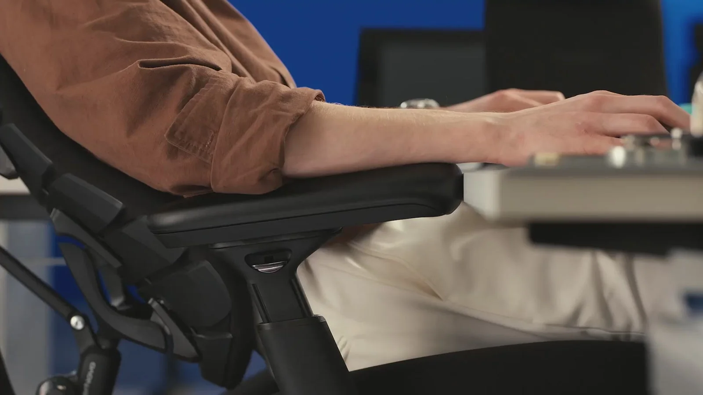

Neck support tracking
Angles with your head to keep your gaze level and neck supported
Подголовник

Backrest tracking
Follows your back through every shift for continuous spinal support
Спинка

Seat tracking
Adjusts with your posture to keep your hips aligned and stable
Сиденье

Armrest tracking
Moves with your arms to maintain support without interruption
Подлокотники
